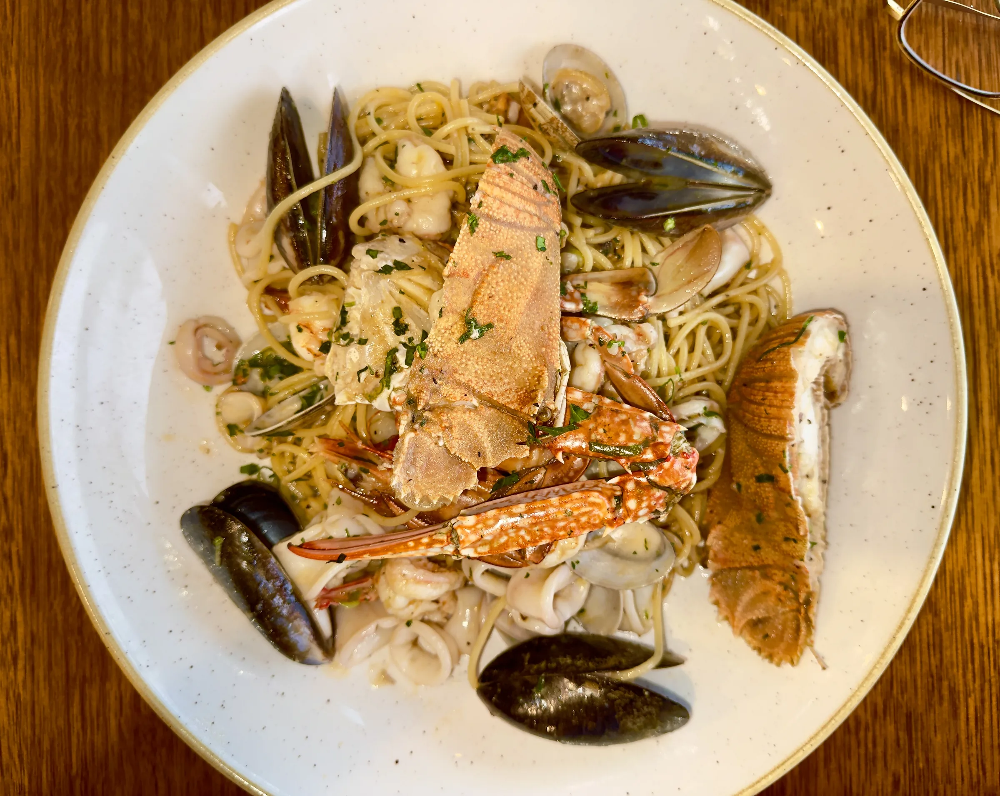
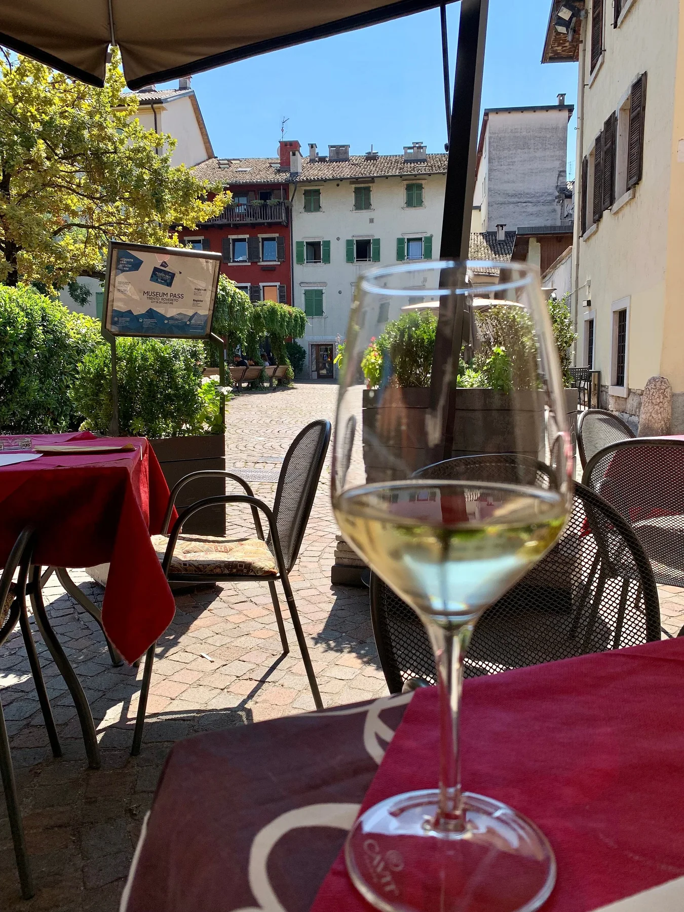
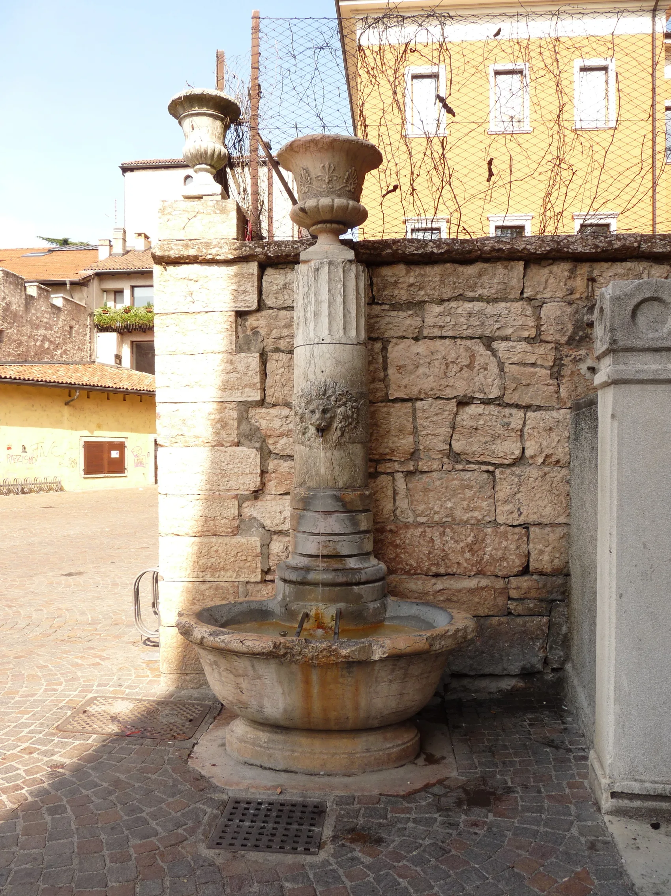
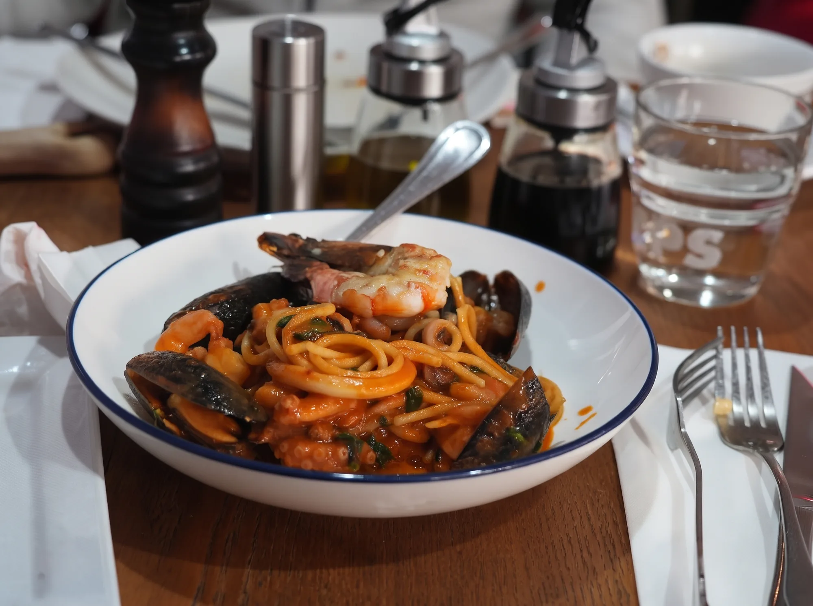
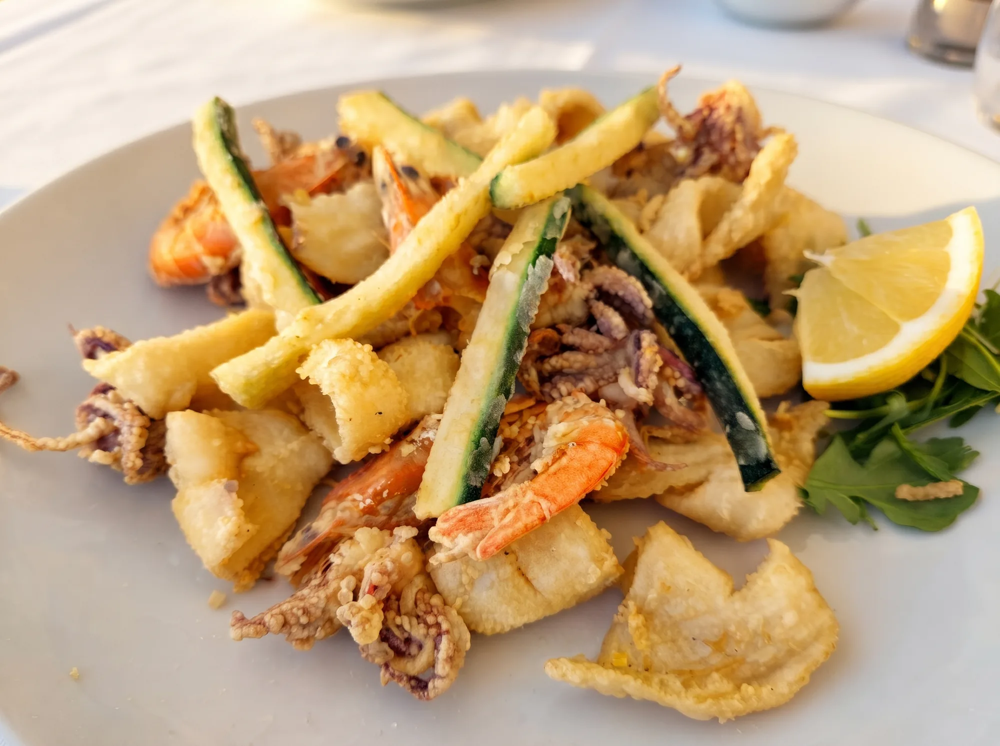
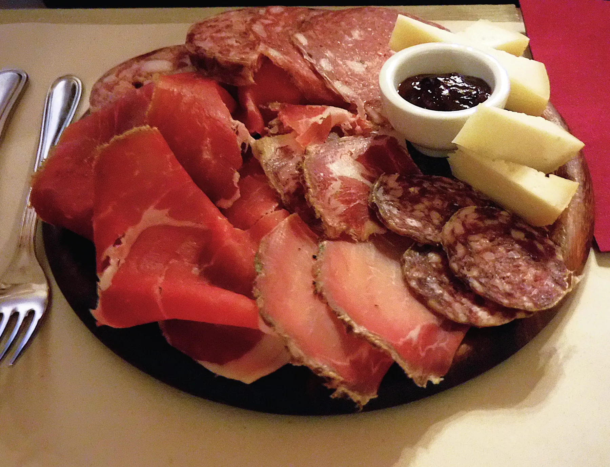
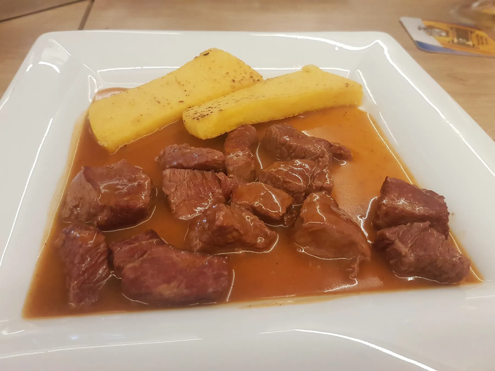
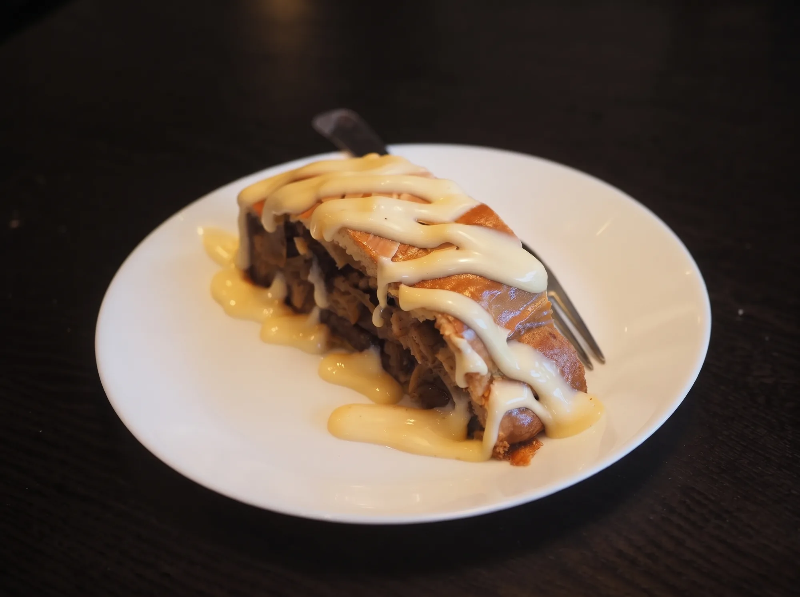
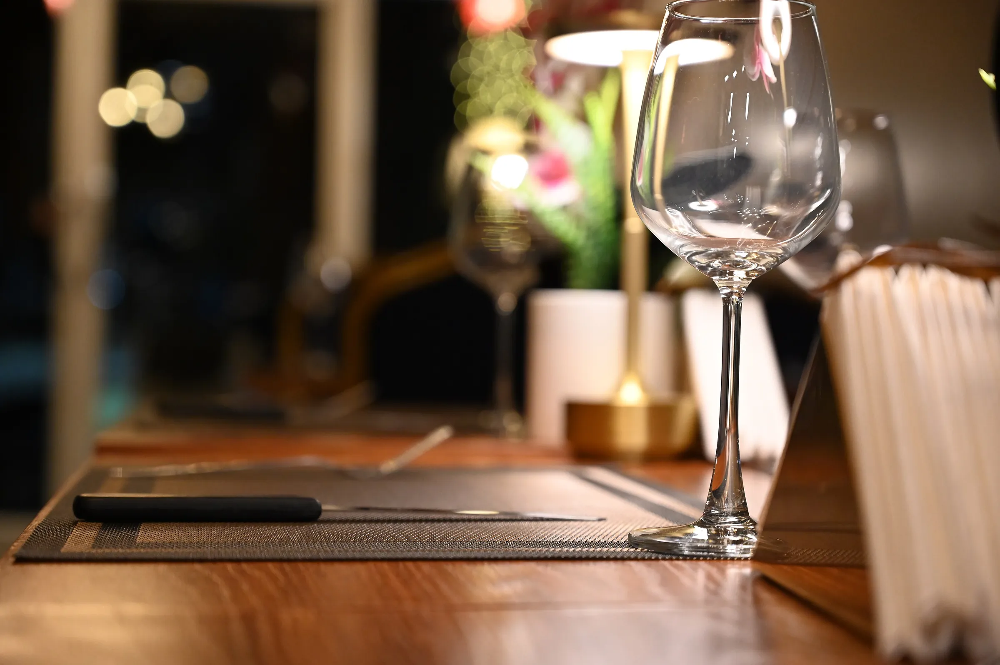

Antica Trattoria
al Mercato
Pesce di mare e piatti trentini in piazza Garzetti, nel cuore di Trento. Dal 1931.
Aperti a pranzo e a cena. Il lunedì siamo chiusi.

Siamo Marco e Adina
Da febbraio 2026 gestiamo la trattoria Al Mercato, che in piazza Garzetti c’è dal 1931.
Per più di sessant’anni l’ha tenuta la famiglia Baldessari, con la cucina trentina di casa. Raccogliere un’eredità così è una grande responsabilità, ma anche una bellissima sfida.
Io sono di famiglia trentina, mamma di Tione e papà di Stenico, ma sono nato e cresciuto a Chiavari, in Liguria. Per questo in cucina trovate il mare: il polipo alla ligure, gli spaghetti alle vongole, la frittura di alici. E accanto, la montagna di sempre.
Prezzi giusti e un’attenzione ai pranzi di lavoro: lo spirito della trattoria resta quello di prima.
Marco Parisi e Adina
Dal 1931 a oggi
- 1931
- Apre la trattoria Al Mercato, in piazza Garzetti.
- Anni ’50
- La prendono Bruno e Valeria Baldessari, poi con il figlio Dino: oltre sessant’anni di cucina trentina di casa.
- 2026
- Il 21 febbraio riapre con Marco Parisi e Adina. Il mare entra in menù, la tradizione resta.

Dalla nostra cucina






Venite a trovarci
Piazza Garzetti 15, Trento. Aperti a pranzo e a cena, chiuso il lunedì. Meglio prenotare.
Per gruppi e pranzi di lavoro chiamate Marco al 392 9457466.